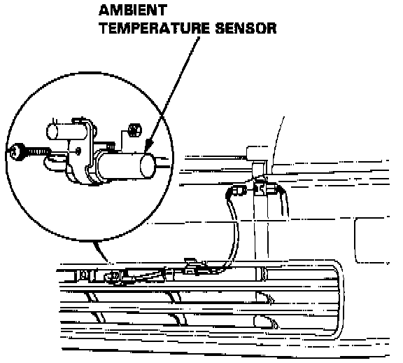

Ambient Temperature Sensor / Switch HVAC: Service and Repair
REMOVAL1. Remove the front grille.

2. Remove the screw, disconnect the wire harness and then remove the ambient temperature sensor.
NOTE: Be careful not to damage the front grille and front bumper.
INSTALLATION
Install the ambient temperature sensor in the reverse order of removal.